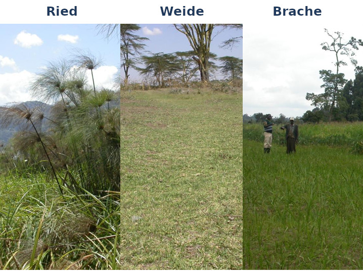
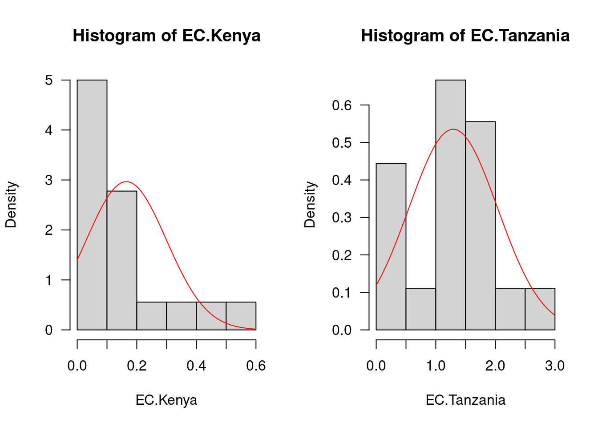
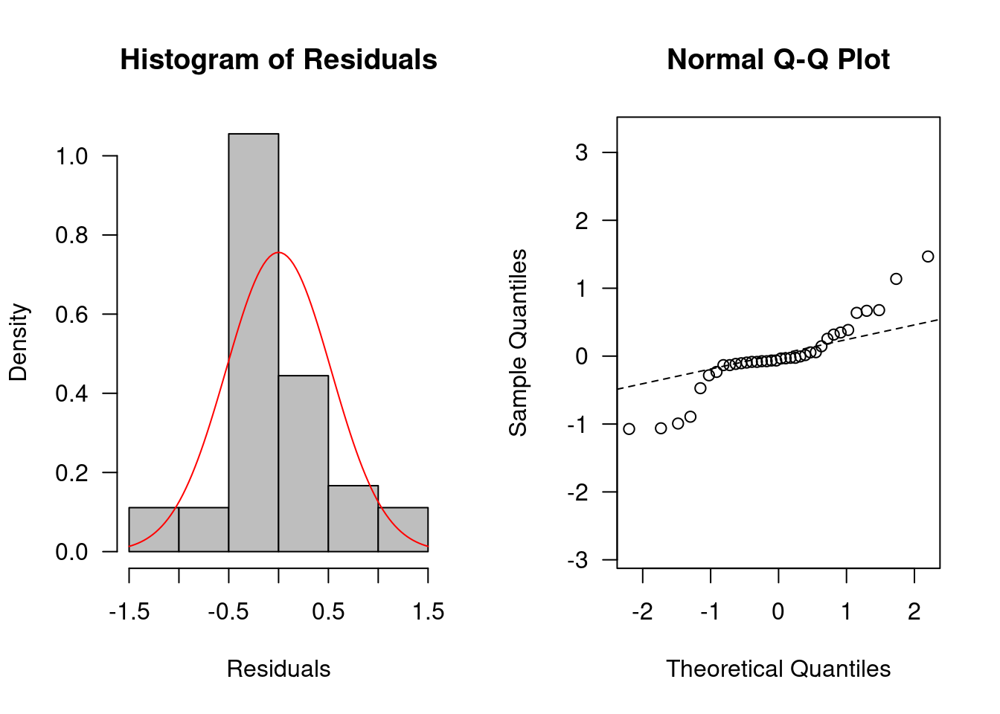
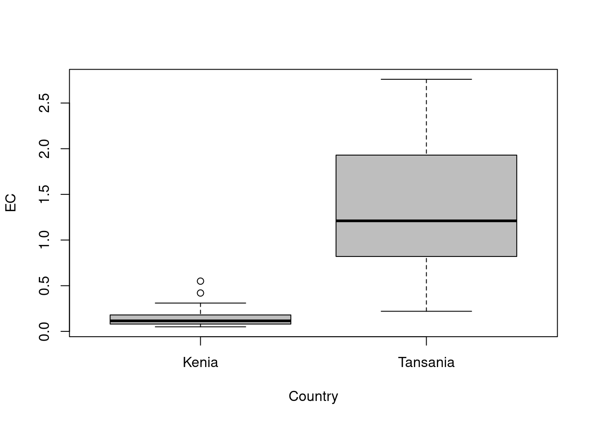
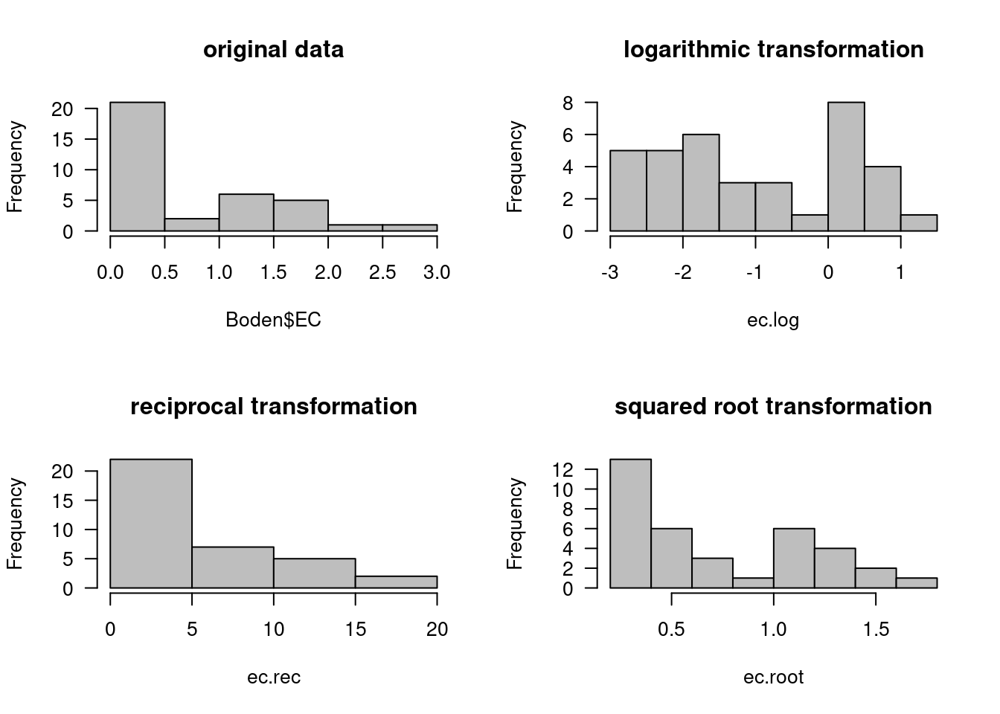
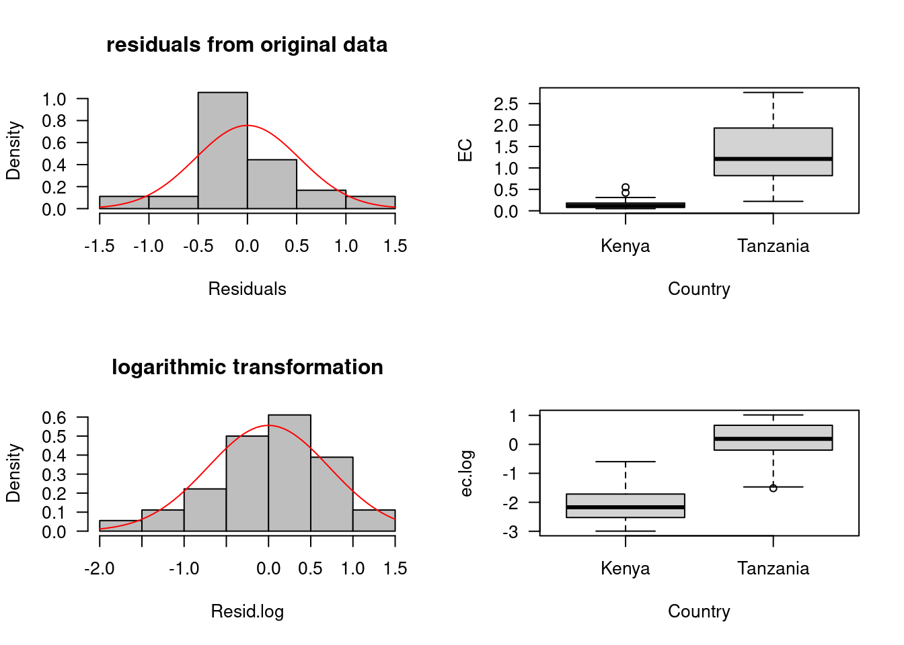
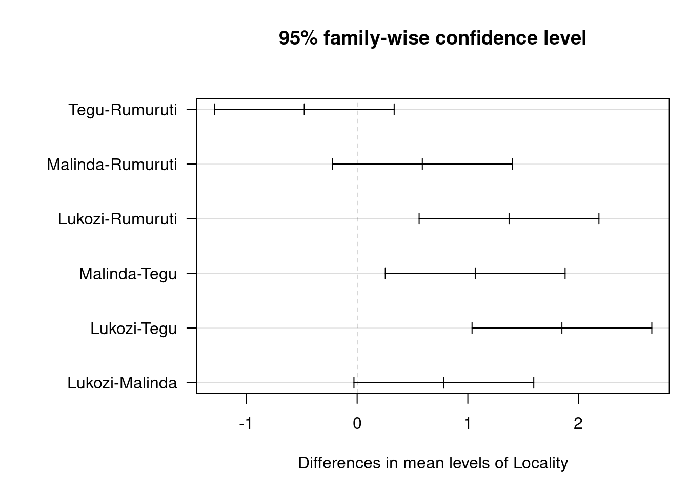

download.file(url = "https://kamapu.github.io/GrundkursR/Dateien/KursDateien.zip",
destfile = "KursDateien.zip", method = "curl")
unzip("KursDateien.zip", overwrite = TRUE)
unlink("KursDateien.zip")Einführung in die parametrischen Tests
Übung
Ein Workflow für die parametrische Statistik und das Testen von Hypothesen unter der Annahme der Normalverteilung.
Datenaufbereitung
Wir laden die Kursdatensätze wie gewohnt in unsere Sitzung:
Wir lesen die Daten ein, dabei setzten wir die Landnutzung und das Land entsprechend als Faktoren (kategorische Variablen).
Boden <- read.csv("Africa.env.csv")
Boden$Country <- factor(Boden$Country,
levels = c("Kenya", "Tanzania"),
labels = c("Kenia", "Tansania"))
Boden$Locality <- factor(Boden$Locality,
levels = c("Rumuruti", "Tegu", "Malinda", "Lukozi"))
Boden$LandUse <- factor(Boden$LandUse,
levels = c("Unused", "Grazing", "Fallow"),
labels = c("Ried", "Weide", "Brache"))Der Datensatz Boden enthält Beobachtungen von 36 Untersuchungsfeldern in vier Orten (zwei Orte in Kenia und zwei Orte in Tansania). Die Untersuchungsfelder sind in drei Landnutzungen unterteilt, nämlich “ungenutzte Flächen” (halbnatürliche Vegetation, entspricht Ried), “Weiden” und “Brachen” (lang- und kurzfristig aufgegebene Ackerflächen).

Zusätzlich zur Zugehörigkeit zu Land, Ort und Landnutzung enthält Boden die bodenchemischen Variablen für jede Fläche, nämlich den Gehalt an organischem Kohlenstoffgehalt (g kg-1), Gesamtstickstoffgehalt (g kg-1), pflanzenverfügbarer Phosphor (mg kg-1), austauschbares Kalium (cmol kg-1), elektrische Leitfähigkeit (dS m-1) und pH-Wert (Kamiri 2010).
Varianzanalyse
Die Varianzanalyse (Analysis of Variance, ANOVA) geht davon aus, dass die Variabilität von Messungen durch bestimmte Faktoren beeinflusst wird. Zusätzliche Effekte durch unbekannte Faktoren werden als zufällig (unsystematisch) betrachtet und als “experimentelle Fehler” bezeichnet. Für eine einfachen Erklärung betrachten wir die Wirkung eines einzigen Faktors (unabhängige Variable) auf eine abhängige Variable, die so genannte einseitige ANOVA.
Um dieses Beispiel in einen wissenschaftlichen Kontext zu stellen, lautet unsere Frage: Ist die elektrische Leitfähigkeit des Bödens von ihrem Herkunftsland abhängig? Oder mit anderen Worten “Beeinflusst das Herkunftsland die elektrische Leitfähigkeit der Böden?” Dann können wir eine Nullhypothese formulieren H0: “Die elektrische Leitfähigkeit von Böden ist nicht abhängig von ihrem Herkunftsland”. Die Alternativhypothese lautet H1: “Die elektrische Leitfähigkeit ist abhängig vom Herkunftsland Herkunftsland ab und unterscheidet sich daher zwischen den Ländern”.
Zur Durchführung der Varianzanalyse verwenden wir die Funktion aov(), die intern ein lineares Modell aufruft (Funktion ). Alternativ können Sie auch die Funktion anova() verwenden, aber dann können Sie vorher das lineare Modell anpassen.
ANOVA <- aov(EC ~ Country, data = Boden)
summary(ANOVA) Df Sum Sq Mean Sq F value Pr(>F)
Country 1 11.447 11.447 39.94 3.32e-07 ***
Residuals 34 9.745 0.287
---
Signif. codes: 0 '***' 0.001 '**' 0.01 '*' 0.05 '.' 0.1 ' ' 1Nach dem Ergebnis von aov() gibt es einen signifikanten Unterschied in der elektrischen Leitfähigkeit des Bodens zwischen den Ländern. Aber ist dieses Ergebnis gut genug? Die Varianzanalyse ist ein parametrischer Test, d. h., die Werte können innerhalb der Populationen (in diesem Fall verschiedene Länder) normalverteilt sein. Außerdem können die Varianzen zwischen den verglichenen Populationen homogen verteilt sein verteilt sein (Homoskedastizität).
Test auf Normalverteilung
Bevor wir mit der Prüfung der Normalität beginnen, sehen wir uns eine grafische Übersicht über die Verteilung der Werte für die Variable elektrische Leitfähigkeit. Dazu teilen wir zunächst die Variable nach Herkunftsland auf und überprüfen dann deren Histogramme.
## Leitfähigkeit der Bodenproben aus Kenia
EC.Kenia <- subset(Boden, Country == "Kenia")$EC
## Leitfähigkeit der Bodenproben aus Tansania
EC.Tansania <- subset(Boden, Country == "Tansania")$EC
## Histogramme
par(mfrow = c(1,2), las = 1)
## Leitfähigkeit der Bodenproben aus Kenia
hist(EC.Kenia, freq = FALSE)
curve(dnorm(x, mean = mean(EC.Kenia), sd = sd(EC.Kenia)), col = "red", add = TRUE)
## Leitfähigkeit der Bodenproben aus Tansania
hist(EC.Tansania, freq = FALSE)
curve(dnorm(x, mean = mean(EC.Tansania), sd = sd(EC.Tansania)), col = "red", add = TRUE)
Um die Sache zu vereinfachen, können wir alternativ die Verteilung der Residuen in den Modellen überprüfen. Hier werden wir eine zusätzliche grafische Option verwenden, die die Abweichung der beobachteten Verteilung von einer theoretischen Normalverteilung, nämlich den normalen Quantil-Quantil-Plot (Q-Q-Plot).
## Residuen
Residuals <- resid(ANOVA)
par(mfrow = c(1, 2), las = 1)
hist(Residuals, freq = FALSE, col = "grey")
curve(dnorm(x, mean = mean(Residuals), sd = sd(Residuals)), col = "red", add = TRUE)
qqnorm(Residuals, asp = 1)
qqline(Residuals, lty = 2)
Was ist Ihre Meinung? Ist die Verteilung der Residuen eine Normalverteilung? Während einige Autoren eine visuelle Beurteilung als ehrliche Alternative empfehlen, um zu entscheiden, ob die Verteilung als normal anzusehen ist oder nicht, raten andere Autoren, dass eine visuelle Beurteilung einen Test nicht ersetzen kann.
Um die Normalverteilung von Werten zu überprüfen, haben wir unter anderem zwei Alternativen, den Kolmogorov-Smirnov-Test (Funktion ks.test()) und den Shapiro-Wilk Test (Funktion shapiro.test()). In dieser Sitzung werden wir die zweite Option (für Anwendungen von ks.test(), siehe Dormann und Kühn 2008).
shapiro.test(Residuals)
Shapiro-Wilk normality test
data: Residuals
W = 0.90258, p-value = 0.004017Beim Shapiro-Wilk-Test lautet unsere Nullhypothese H0: “Die Verteilung der Residuen unterscheidet sich nicht von einer Normalverteilung”. Unter Berücksichtigung eines Konfidenzintervalls von 95% werden wir signifikante Unterschiede feststellen, wenn der p-Wert kleiner oder gleich 5% ist (P < 0,05), was in diesem Beispiel der Fall ist.
Tests auf Homoskedastizität
Die zweite Voraussetzung für eine ANOVA ist eine homogene Verteilung der Varianzen zwischen den Populationen (Homoskedastizität). Wie im vorherigen Beispiel werden wir suchen wir zunächst nach einer grafischen Option, in diesem Fall ein Boxplot der elektrischen Leitfähigkeit nach Land.
boxplot(EC ~ Country, data = Boden, col = "grey")
Offensichtlich ist die Varianz in den tansanischen Stichproben viel höher als die Varianz für die kenianischen Stichproben. Damit haben wir zwar auch mehr als eine Alternative für statistische Tests, aber wir werden nur den Bartlett-Test anwenden (Funktion bartlett.test()).
bartlett.test(EC ~ Country, data = Boden)
Bartlett test of homogeneity of variances
data: EC by Country
Bartlett's K-squared = 34.712, df = 1, p-value = 3.823e-09Unsere Nullhypothese lautete also: H0: “die Varianzen der Bodenelektrizitätskonstante im Ländervergleich sind homogen”. Nochmals deutet hier ein P-Wert von weniger als 5% auf einen signifikanten Unterschied zwischen Varianzen an.
Zusammenfassend lässt sich sagen, dass die Variable Leitfähigkeit nicht die Anforderungen an einen parametrischen Test und die Ergebnisse der ersten ANOVA sind nicht gültig. Was ist nun zu tun?
Umwandlung von Daten
Es ist nicht alles verloren. Die Rettung kann die Daten Transformation. Die gängigsten Methoden sind relativ einfach (siehe Tabelle). Solche Transformationen ändern nicht nur die Skala der Variablen, sondern sie verändern auch die Verteilung der Werte. Numerische Variablen werden häufig mit Hilfe der logarithmischen, reziproken und Quadratwurzel-Transformationen. Die Arkansinus-Quadratwurzel-Transformation wird verwendet, um Prozentsätze und Proportionen zu transformieren.
| Formel | Anmerkungen |
|---|---|
log(x + c, base=exp(1)) |
Logarithmus-Transformation |
1/(x + c) |
Kehrwert-Transformation |
sqrt(x + c) |
Quadratwurzel-Transformation |
asin(sqrt(x/c))*180/pi |
Arkansinus-Quadrat-Wurzel-Transformation |
(x - mean(x)/sd(x)), scale(x) |
Standardisierung (Reskalierung) |
Wenn die genannten Transformationen nicht erfolgreich waren, bleibt die Alternative einer einer Box-Cox-Transformation. Hierfür steht die Funktion boxcox() im dem Paket MASS zur Verfügung.
Einige Spezialfälle sind die Dummy-Transformation, die für die Analyse von nominalen Variablen angewandt wird, und die Standardisierung, die vor allem in der multivariaten Statistik benötigt wird.
# Logarithmus-Transformation
ec.log <- log(Boden$EC, base = exp(1))
# Kehrwert-Transformation
ec.rec <- 1/Boden$EC
# Quadratwurzel-Transformation
ec.root <- sqrt(Boden$EC)Schauen wir uns die Auswirkungen der vorherigen Datentransformationen auf die Verteilung der Werte.
par(mfrow=c(2,2), las=1)
hist(Boden$EC, col="grey", main = "original data")
hist(ec.log, col="grey", main = "logarithmic transformation")
hist(ec.rec, col="grey", main = "reciprocal transformation")
hist(ec.root, col="grey", main = "squared root transformation")
Wir testen zunächst die Normalität der Residuen und die Homoskedastizität der Varianzen bei der logarithmischen Transformation der elektrischen Leitfähigkeit des Bodens.
# Test to normality
shapiro.test(resid(aov(ec.log ~ Country, data = Boden)))
Shapiro-Wilk normality test
data: resid(aov(ec.log ~ Country, data = Boden))
W = 0.9831, p-value = 0.8442# Test to homoscedasticity
bartlett.test(ec.log ~ Country, data = Boden)
Bartlett test of homogeneity of variances
data: ec.log by Country
Bartlett's K-squared = 0.52083, df = 1, p-value = 0.4705Hier erhalten wir für die logarithmische Transformation der Leitfähigkeit des Bodens sowohl im Shapiro-Wilk-Test als auch im Bartlett-Test P-Werte größer als 0,05. Das heißt, die Residuen sind normalverteilt und die Varianzen sind homogen. Aber was ist mit den anderen Transformationsalternativen?
# Tests for reciprocal transformation
shapiro.test(resid(aov(ec.rec ~ Country, data = Boden)))
Shapiro-Wilk normality test
data: resid(aov(ec.rec ~ Country, data = Boden))
W = 0.93684, p-value = 0.04055bartlett.test(ec.rec ~ Country, data = Boden)
Bartlett test of homogeneity of variances
data: ec.rec by Country
Bartlett's K-squared = 22.503, df = 1, p-value = 2.098e-06# Tests for squared root transformation
shapiro.test(resid(aov(ec.root ~ Country, data = Boden)))
Shapiro-Wilk normality test
data: resid(aov(ec.root ~ Country, data = Boden))
W = 0.94361, p-value = 0.06584bartlett.test(ec.root ~ Country, data = Boden)
Bartlett test of homogeneity of variances
data: ec.root by Country
Bartlett's K-squared = 12.733, df = 1, p-value = 0.0003592Für die Kehrwert-Transformation ist keine der Anforderungen erfüllt (unter Berücksichtigung desselben Signifikanzintervalls von 95%), während bei der quadratischen Wurzeltransformation nur die Normalität der Residuen erreicht werden kann. Daraus folgt, ist die logarithmische Transformation die einzige, die die Daten für einen parametrischen Test. Wir können die ursprünglichen und die transformierten Daten in den folgenden Grafiken.
# Calculation of residuals for logarithmic transformation
Resid.log <- resid(aov(ec.log ~ Country, data = Boden))
# Plotting distributions
par(mfrow = c(2, 2), las = 1)
hist(Residuals, freq = FALSE, col = "grey", main = "residuals from original data")
curve(dnorm(x, mean = mean(Residuals), sd = sd(Residuals)), col = "red", add = TRUE)
boxplot(EC ~ Country, data = Boden)
hist(Resid.log, freq = FALSE, col = "grey", main = "logarithmic transformation")
curve(dnorm(x, mean = mean(Resid.log), sd = sd(Resid.log)), col = "red", add = TRUE)
boxplot(ec.log ~ Country, data = Boden)
Nach der Logarithmus-Transformation scheint das Histogramm besser an eine theoretische Normalverteilung angepasst und die Boxplots sind in ihren Amplituden ähnlich.
ANOVA richtig gemacht
Sobald wir eine geeignete Transformation der Daten gefunden haben, können wir die ANOVA durchführen und korrekte Ergebnisse sicherstellen.
ANOVA <- aov(ec.log ~ LandUse, data = Boden)
summary(ANOVA) Df Sum Sq Mean Sq F value Pr(>F)
LandUse 2 0.19 0.0975 0.057 0.944
Residuals 33 56.03 1.6978 Nach der Transformation gibt es immer noch einen hochsignifikanten Unterschied zwischen Ländern in der elektrischen Leitfähigkeit des Bodens. Und wir können es veröffentlichen.
Post-hoc Kontrast
Bevor ich den parametrischen Test beende, möchte ich noch einige Ratschläge geben bezüglich ANOVA. Im Beispiel haben wir die ANOVA auf einen Faktor mit nur zwei Stufen (Kenia und Tansania). In einem solchen Fall kann die Verwendung eines gepaarten t-Tests mit zwei Stichproben ausreichend sein (Funktion pairwise.t.test()). Wir können die einseitige ANOVA stattdessen auf Faktoren mit mehr als zwei Stufen anwenden, z. B. zum Vergleich der Bodenreaktion an verschiedenen Orten.
ANOVA <- aov(pH ~ Locality, data = Boden)
summary(ANOVA) Df Sum Sq Mean Sq F value Pr(>F)
Locality 3 17.17 5.724 14.15 4.82e-06 ***
Residuals 32 12.94 0.404
---
Signif. codes: 0 '***' 0.001 '**' 0.01 '*' 0.05 '.' 0.1 ' ' 1In anderen Fällen kann es erforderlich sein, eine neue erklärende (unabhängige) Variable hinzuzufügen, zum Beispiel die Art der Landnutzung.
ANOVA <- aov(pH ~ Locality + LandUse, data = Boden)
summary(ANOVA) Df Sum Sq Mean Sq F value Pr(>F)
Locality 3 17.172 5.724 14.410 5.4e-06 ***
LandUse 2 1.024 0.512 1.289 0.29
Residuals 30 11.916 0.397
---
Signif. codes: 0 '***' 0.001 '**' 0.01 '*' 0.05 '.' 0.1 ' ' 1Oder noch mehr, wir müssen vielleicht auch die Interaktion zwischen den Faktoren kennen.
ANOVA <- aov(pH ~ Locality * LandUse, data = Boden)
summary(ANOVA) Df Sum Sq Mean Sq F value Pr(>F)
Locality 3 17.172 5.724 14.865 1.12e-05 ***
LandUse 2 1.024 0.512 1.329 0.283
Locality:LandUse 6 2.675 0.446 1.158 0.361
Residuals 24 9.242 0.385
---
Signif. codes: 0 '***' 0.001 '**' 0.01 '*' 0.05 '.' 0.1 ' ' 1Wir kehren zum ersten Beispiel zurück und testen die Auswirkung des Standorts auf die Bodenreaktion (gemessen als pH-Wert). Natürlich können Sie vorher die Normalität der Normalität der Residuen und die Homoskedastizität der Varianzen prüfen, aber dies ist nur ein Beispiel. Hier sagt uns die ANOVA “es gibt einen Unterschied in der Bodenreaktion in Abhängigkeit vom Ort der Probenahme”, aber wir wissen nicht, an welchen Orten sich die Boden-pH-Werte von denen der anderen unterscheiden. Um das zu wissen, benötigen wir eine post-hoc-Kontrast. In dieser Sitzung werden wir den Tukey’s honest signifikanten Unterschied (Funktion TukeyHSD()).
ANOVA <- aov(pH ~ Locality, data = Boden)
summary(ANOVA) Df Sum Sq Mean Sq F value Pr(>F)
Locality 3 17.17 5.724 14.15 4.82e-06 ***
Residuals 32 12.94 0.404
---
Signif. codes: 0 '***' 0.001 '**' 0.01 '*' 0.05 '.' 0.1 ' ' 1Tukey <- TukeyHSD(ANOVA)
Tukey Tukey multiple comparisons of means
95% family-wise confidence level
Fit: aov(formula = pH ~ Locality, data = Boden)
$Locality
diff lwr upr p adj
Tegu-Rumuruti -0.4777778 -1.28995887 0.3344033 0.3963421
Malinda-Rumuruti 0.5888889 -0.22329220 1.4010700 0.2225102
Lukozi-Rumuruti 1.3722222 0.56004113 2.1844033 0.0003764
Malinda-Tegu 1.0666667 0.25448558 1.8788478 0.0062137
Lukozi-Tegu 1.8500000 1.03781891 2.6621811 0.0000038
Lukozi-Malinda 0.7833333 -0.02884776 1.5955144 0.0619263In der Ausgabe von TukeyHSD() können Sie die paarweisen Vergleiche suchen bei denen sowohl die obere als auch die untere Grenze der Differenz entweder negativ oder positiv sind. Wenn die genannten Werte unterschiedliche Symbole haben, ist der Unterschied nicht signifikant. Dies kann auch in der Spalte mit den P-Werten überprüft werden (p adj). Es gibt auch eine grafische Option zur Anzeige der Ergebnisse von TukeyHSD().
# Plotten der Tukey-Ausgabe
par(las = 1, mar = c(5, 10, 5, 1))
plot(Tukey)
Disclaimer
Dieses Handout ist eine vorläufige Version, die von einem Nicht-Statistiker erstellt wurde, daher ist die Verwendung vorsichtig und auf eigenes Risiko. Da dieser Text für weitere R-Kurse verbessert werden soll R-Kursen verbessert werden soll, ist jeder Kommentar, jede Korrektur und jeder Vorschlag höchst willkommen (senden Sie diese an kamapu@posteo.de).
Der Inhalt dieses Handouts basiert auf deutschen Referenzen (Ligges 2008; Köhler, Schachtel, und Voleske 2012; Dormann und Kühn 2008). Für Referenzen auf Englisch, siehe Zuur, Ieno, und Elphick (2010) und Everitt und Hothorn (2010).
Übungen
- Sie fragen: “Gibt es einen Unterschied im pH-Wert des Bodens zwischen den Unterschiede zwischen den Probenahmestandorten?”, aber diesmal überprüfen Sie zuerst die Normalverteilung der Residuen und die Homogenität der Varianzen zwischen den Orten.
- Gibt es Unterschiede zwischen den angewandten Insektiziden in der Menge der Insekten (Überlebende) in den Versuchsparzellen gefunden? Verwenden Sie den Datensatz
InsectSprays. - Wenden Sie eine faktorielle ANOVA auf den Datensatz
ToothGrowthan. - Versuchen Sie nun das Gleiche mit Ihrem eigenen Datensatz.
Referenzen
Dormann, Carsten F, und Ingolf Kühn. 2008. Angewandte Statistik für die biologischen Wissenschaften. Bd. 2. Leipzig-Halle: UFZ. https://www.ufz.de/export/data/2/92353_deutschstatswork_23022011.pdf.
Everitt, Brian S., und Torsten Hothorn. 2010. A Handbook of Statistical Analyses Using R, Second Edition. Chapman; Hall/CRC.
Kamiri, Hellen Wangechi. 2010. Effects of land use dynamics on attributes of wetland soils in Africa. Bonn: INRES.
Köhler, Wolfgang, Gabriel Schachtel, und Peter Voleske. 2012. Biostatistik. Springer-Lehrbuch. Springer Berlin Heidelberg. https://doi.org/10.1007/978-3-642-29271-2.
Ligges, Uwe. 2008. Programmieren mit R. Berlin: Springer. https://doi.org/10.1007/978-3-540-79998-6.
Zuur, Alain F., Elena N. Ieno, und Chris S. Elphick. 2010. „A protocol for data exploration to avoid common statistical problems“. Methods in Ecology and Evolution 1 (1): 3–14. https://doi.org/10.1111/j.2041-210x.2009.00001.x.